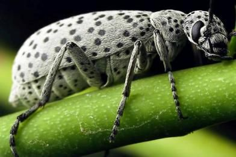

-Photoroom.png)
São besouros de corpo oval-alongado, cor cinza e com várias manchas escuras nas asas. O aspecto geral é aveludado.
As fêmeas depositam os ovos no solo, sempre em grupos de 50 a 80. As larvas se desenvolvem no solo, porém não atacam ou comem qualquer parte da planta de batata.
Os adultos normalmente chegam em grandes revoadas (bando) na lavoura de batata e também, curiosamente, saem, subitamente, em bando. Comem vorazmente as folhas da batata,
principalmente as mais jovens, situadas no terço superior da planta. A infestação ocorre em manchas ou focos dentro da lavoura, muito raramente estendendo-se por grandes áreas.
Sob determinadas condições, como no início do período vegetativo, em lavouras pequenas, a desfolha brusca e intensa causada por burrinhos pode ser total,
ficando somente as nervuras das folhas e talos da planta, o que, sem dúvidas, levaria à redução da produção e até a morte precoce da planta.
Burrinho

Combate
Controle do Burrinho
Controle: Aplicações de inseticidas fosforados e clorofosforados, registrados para as culturas.
Alguns produtos indicados:
PRODUTOS INDICADOS
Alfa Super 100 EC
Sharda,
Alfa-Cipermetrina
Coraza
TradeCorp,
Deltametrina
Davos
TradeCorp,
Lambda-Cialotrina
Decis 25 EC
Bayer,
Deltametrina.
(CONSULTE UM ESPECIALISTA!!!)